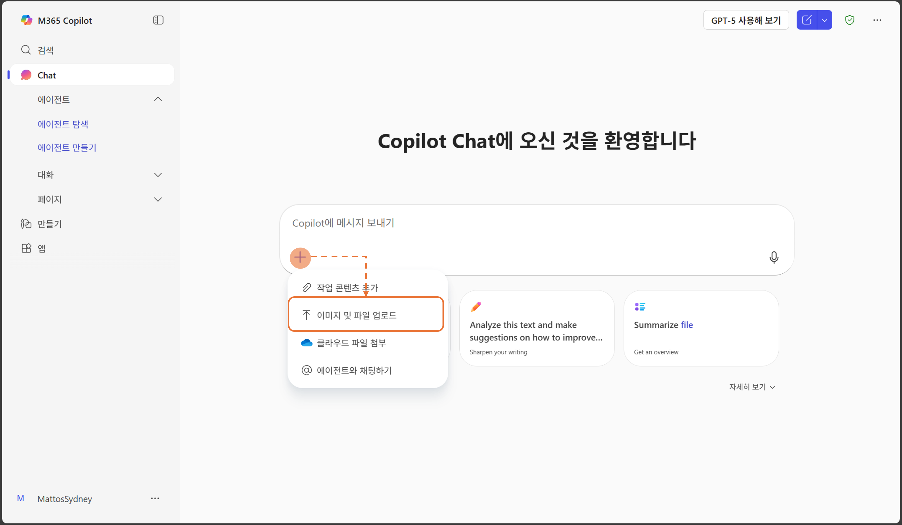

이번 퀘스트에서는 통계 데이터를 활용하여 시장과 상권을 분석하고 연령대별 특성을 이해합니다.

-
우측 상단의
 "새채팅"을 선택합니다.
"새채팅"을 선택합니다.

- 아래의 샘플 프롬프트를 입력합니다. [대괄호]로 싸여 있는 부분을 취향에 따라 수정하십시오. (대괄호는 지우시고요)
- [대괄호] 내용을 창의적으로 변경해보면서 마음에 들 때까지 다시 생성해 봅니다.
- 다음의 링크로 이동하여 에서 "서울지역상권데이터.xlsx" 파일을 다운로드 합니다.
-
문서를 기반으로 답변을 요청할 때는 Copilot Chat 프롬프트 입력창에서 파일 업로드를 선택하여 파일을 지정할 수 있습니다. 3에서 다운받은 실습파일을 선택합니다.

🚩 데이터 분석하기
통계 정보를 활용하여 데이터를 분석하여 인사이트를 확인합니다.
[샘플 프롬프트]
서울지역상권데이터.xlsx 인사이트를 알려줘
상권 분석을 위해 확인 해야할 지표를 제안해줘
상권점수화 모델을 알려줘
서울 지역 점수표 만들어줘
폐업률이 높은 지역 5개를 알려줘
[강남구]와 [중구]의 생존율/개업/폐업를 보여줘
연령대별 소비스타일 시트에서 [20대]와 [40대]의 차이를 각 소비스타일별로 답변 값과 어떤 차이를 보이는지와 그 이유를 테이블 형태로 정리해서 보여줘.
연령대별 소비스타일 차이를 보이는 사회적인 배경과 트랜드를 웹데이터를 참고해서 알려줘.